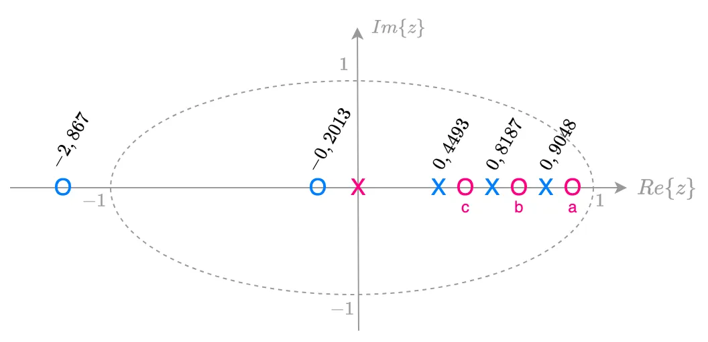
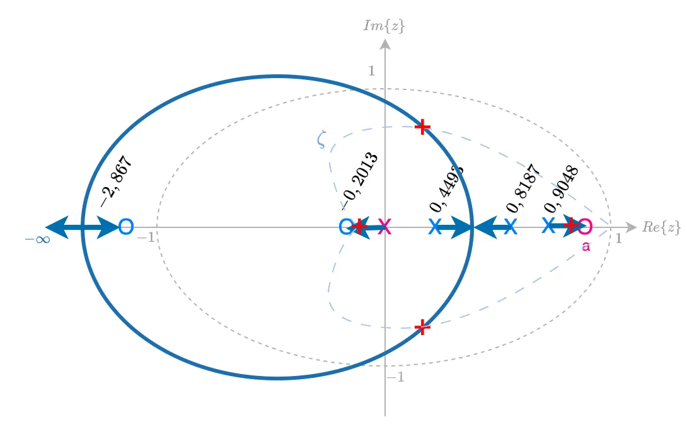
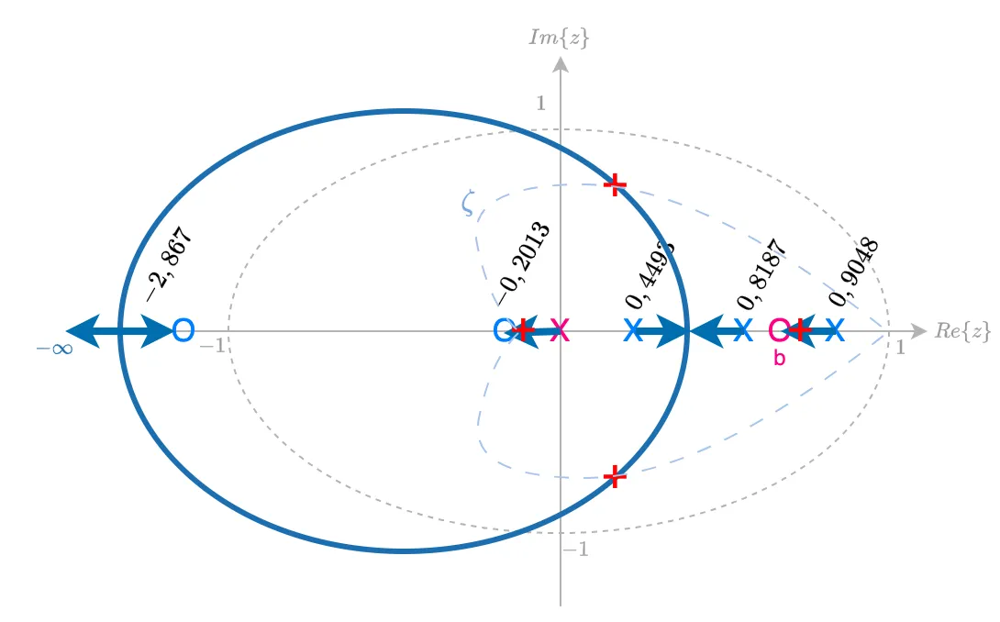
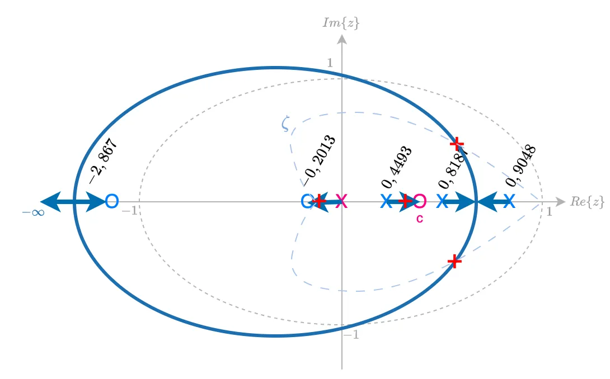
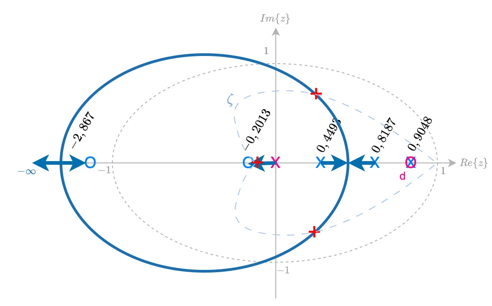
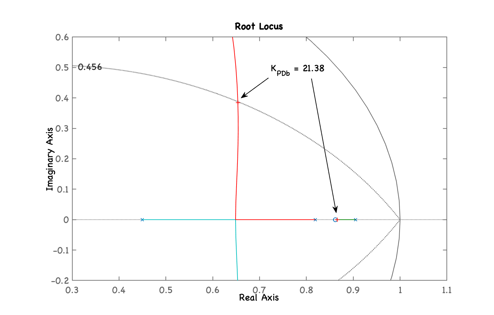

Projeto de Controladores
Continuação da aula de 29/04/2024 depois de passar pelo Resumo de controladores com ação derivativa:
>> load plantaüíæ Arquivo: planta.mat.
Projeto de PD
Equação genérica do PD:
O pólo fica em (na origem) e nossa única incógnita é a posição do zero, .
A posição do zero do PD depende dos pólos e zeros da planta.
Lembrando da eq. da planta:
>> zpk(BoG) 0.0020446 (z+2.867) (z+0.2013) -------------------------------- (z-0.9048) (z-0.8187) (z-0.4493) Sample time: 0.1 secondsDiscrete-time zero/pole/gain model.Considerando o acréscimo de um controlador PD aos pólos e zeros da planta, temos 3 opções em vista:

Sendo as 3 opções:
- a) zero do PD em: (entre o pólo mais lento da planta e o círculo unitário, mas sem estar sobre o círculo unitário);
- b) zero do PD em: (entre os 2 pólos mais lentos da planta);
- c) zero do PD em: (entre os 2 pólos não tão lentos da planta).
Graficamente:
A opção "a" resulta no RL similar ao mostrado abaixo:

Notamos que ficamos com um pólo dominante em MF, real, muito próximo do círculo unitário (tendendo para a posição do zero do PD).
A opção "b" resulta neste outro RL:

Esta opção é melhor que a opção anterior, porque o pólo de MF real dominante ao invés de caminhar na direção do circulo unitário (implicando atraso na resposta do sistema), "caminha" justamente para o outro lado, para , o que garante uma resposta mais rápida em comparação com a opção "a".
E a opção "c" resulta no proximo RL:

Esta opção cria um par de pólos de MF dominantes complexos, aparentemente mais próximos do círculo unitário (mais lentos) que em comparação com os pólos de MF dominantes da opção anterior "b".
Uma 4a-opção, opção"d" surge quando pensamos que podemos cancelar o pólo mais lento da planta (em ), colocando o zero do PD sobre o mesmo. Neste caso, temos um "ganho" extra que seria reduzir a complexidade do sistema. Com as outras opções obtemos um sistema de 4a-ordem em MF. Com esta opção, ficamos um sistema em MF de 3a-ordem. Este RL ficaria algo como:

Esta opção parece a mais promissora. Reduz a complexidade do sistema, e garante um par de pólos complexos de MF dominantes, afastado do círculo unitário.
Projeto do PD "b"
O zero do PD fica em: (entre os 2 pólos + lentos da planta):
xxxxxxxxxx>> ze_PD=(0.9048+0.8187)/2ze_PD = 0.86175>> C_PDb=tf(poly(ze_PD),[1 0],T)‚ÄãC_PDb = z - 0.8618 ---------- z Sample time: 0.1 secondsDiscrete-time transfer function.‚Äã>> ftma_PDb=C_PDb*BoG;>> zpk(ftma_PDb) 0.0020446 (z+2.867) (z-0.8618) (z+0.2013) ----------------------------------------- z (z-0.9048) (z-0.8187) (z-0.4493) Sample time: 0.1 secondsDiscrete-time zero/pole/gain model.‚Äã>> rlocus(ftma_PDb)>> hold on; zgrid(zeta,0)>> axis([0.3 1.1 -0.2 0.6]) % zoom na regi√£o de interesse>> [K_PDb,polosMF]=rlocfind(ftma_PDb)Select a point in the graphics windowselected_point = 0.65484 + 0.38453iK_PDb = 21.38polosMF = 0.86556 + 0i 0.65366 + 0.38451i 0.65366 - 0.38451i -0.043689 + 0iRL deste PD:

Temos o seguinte RL com "zoom" sobre regi√£o de interesse e ressaltando ganho adotado:

Fechando a malha:
xxxxxxxxxx>> ftmf_PDb=feedback(K_PDb*ftma_PDb, 1);>> figure; step(ftmf_PDb)E temos a seguinte resposta ao degrau:

Comparando com outros controladores
xxxxxxxxxx>> figure; step(ftmf_K_OS2, ftmf_PId, ftmf_PDb)>> legend('Prop', 'PId', 'PDb')
Projeto do PD "d"
Realizando o projeto do PD opção "d". Neste caso, analizando os RL's para as outras opções, percebemos uma 4a-opção: "d", neste caso, colocamos o zero do PD propositalmente sobre o pólo + lento da planta (provacando deliberadamente um cancelamento pólo-zero).
xxxxxxxxxx>> polos_BoG=pole(BoG)polos_BoG = 0.90484 0.81873 0.44933>> C_PDd=tf(poly(polos_BoG(1)),[1 0],T)‚ÄãC_PDd = z - 0.9048 ---------- z Sample time: 0.1 secondsDiscrete-time transfer function.‚Äã>> ftma_PDd=C_PDd*BoG;>> figure; rlocus(ftma_PDd)>> hold on; zgrid(zeta,0)>> axis([0.3 1.1 -0.2 0.6])>> [K_PDd,polosMF]=rlocfind(ftma_PDd)Select a point in the graphics windowselected_point = 0.63369 + 0.39825iK_PDd = 21.641polosMF = 0.90484 + 0i 0.63466 + 0.39828i 0.63466 - 0.39828i -0.045501 + 0iTemos o RL com o mesmo "zoom" sobre regi√£o de interesse e ressaltando ganho adotado:

Fechando a malha...
xxxxxxxxxx>> ftmf_PDd=feedback(K_PDd*ftma_PDd, 1);>> figure; step(ftmf_PDb, ftmf_PDd)>> legend('PD(b)', 'PD(d)')Resposta à entrada degrau deste PD:

xxxxxxxxxx>> stepinfo(ftmf_PDd)​ RiseTime: 0.2 SettlingTime: 1.4 SettlingMin: 0.64747 SettlingMax: 0.80581 Overshoot: 19.709 Undershoot: 0 Peak: 0.80581 PeakTime: 0.6O PD "d" é mais rápido que o PD "b", mas o erro é maior:
xxxxxxxxxx>> erro_PDb=((1-dcgain(ftmf_PDb))/1)*100erro_PDb = 25.279>> erro_PDd=((1-dcgain(ftmf_PDd))/1)*100erro_PDd = 32.686Controlador Lead
Neste caso o pólo do controlador se afasta da ligeiramente da origem do plano-z. No caso desta planta sua posição deve ficar abaixo de (pólo mais rápido da planta).
Lembrando da eq. do PD "b":
>> zpk(C_PDb) (z-0.8618) ---------- z Sample time: 0.1 secondsDiscrete-time zero/pole/gain model.Usando a mesma posição do zero do PD "b" para o Lead:
xxxxxxxxxx>> C_Lead=tf(poly(0.8618),[1 -0.2],T)‚ÄãC_Lead = z - 0.8618 ---------- z - 0.2 Sample time: 0.1 secondsDiscrete-time transfer function.‚Äã>> ftma_Lead=C_Lead*BoG;>> figure; rlocus(ftma_Lead)>> hold on; zgrid(zeta,0)>> axis([0.3 1.1 -0.2 0.6])>> [K_Lead,polosMF]=rlocfind(ftma_Lead)Select a point in the graphics windowselected_point = 0.69005 + 0.36477iK_Lead = 15.397polosMF = 0.86586 + 0i 0.68946 + 0.36481i 0.68946 - 0.36481i 0.096638 + 0iObtemos o seguinte RL:

Repare que o pólo deste controlador está afastado da origem do plano-z.
O mesmo RL com zoom na regi√£o de interesse e mostrando ganho adotado:

Fechando a malha...
xxxxxxxxxx>> ftmf_Lead=feedback(K_Lead*ftma_Lead, 1);>> figure; step(ftmf_Lead, ftmf_PDb)>> legend('Lead', 'PD (b)')
Calculando o erro de regime permanente
xxxxxxxxxx>> dcgain(ftmf_Lead)ans = 0.72677>> erro_Lead=((1-dcgain(ftmf_Lead))/1)*100erro_Lead = 27.323Terminando esta seção de trabalho:
xxxxxxxxxx>> save planta>> diary off>> quit